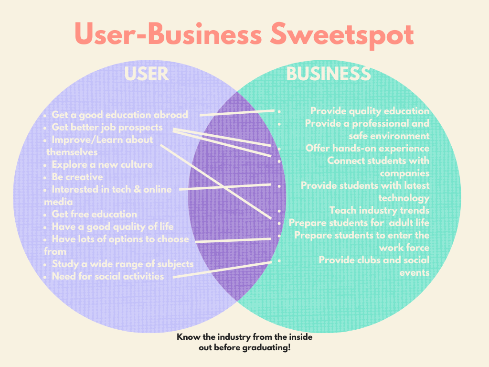

SoMe Purpose and aim/goals
a. Intro to SoMe platforms:
For the purpose of this project we choose to use the social media platforms Tiktok, Instagram and Facebook. For each of these platforms we created a specific purpose:
- Tiktok: Through Tiktok we want to connect with the emotions of our users, so they feel connected with BAA and Aarhus on an emotional basis. The video’s we will post will not necessarily contain a lot of important information regarding studying at BAA, but will provide information about social life here in Aarhus. Give the users an insight of life as a student so they know what to expect from that. Tiktok is getting more and more popular and is now the 6th most-used social media platform in the world. The best time to post on tiktok depends on the day of posting: Monday: 04:00, 12:00, 16:00 Tuesday: 04:00, 08:00, 10:00, 15:00 Wednesday: 13:00, 14:00 Thursday: 05:00, 15:00, 18:00 Friday: 01:00, 11:00, 19:00, 21:00 Saturday: 17:00 Sunday: 01:00, 02:00, 13:00, 14:00, 22:00
- Instagram: Through Instagram we try to interact with our users. It is always fun to interact with the users and in this way we give them a voice while also finding out what they want. In this way we can at the same time improve our content for the future. In 2021 Instagram had 2 billion active monthly users, this gives a high potential of reaching our target group. It is best to post on instagram between 6 and 8 a.m., where people are on their way to work or school for example, and between 5 and 8 p.m., where they are on their way back home for example. Looking at the best days to post content the beginning of the week and fridays perform best.
- Facebook: Facebook will be the platform we use to really inform the users, where Tiktok and Instagram are a bit more fun, Facebook will be the more serious platform. Here the users can find all the important information they need. Facebook users are around 18 26 years old, which fit our target group since students are around that age. While many professionals and commuters also check Facebook in the morning before work, the best time to post to Facebook is in the afternoon between 1 and 4 p.m. and in the evening between 6 and 10 p.m. All together there is also a huge overlap between these three apps which makes it easy to connect the campaign all together. The overlap between Tiktok users and Facebook users is 84.6% and between Tiktok users and Instagram users there is a 83.9% overlap. These percentages are huge and using this in the correct way would really benefit our reach of users.
b. Strategic considerations
SOME strategy and plan must be based on a discussion of the questions:
-
What do we want to achieve with our presence on SOME - and how does
it relate to the overall goal/aim of the company?
- wake interest in the academy
- tell why BAA is the best option for them
- get them to BAA
-
Which stories do we wish to tell and how can we make them relevant
for users on SOME platforms?
- different options to study (innovation and entrepreneurship, multimedia, marketing)
- story how international students came here →settle down in aarhus,denmark (guides)
-
Which types of users do we have and what type of content are the
most likely to react on/interact with?
- young users who are affine with technology →young people like more short interesting videos or content in general (short attention span)
- Short videos →Facebook, Instagram and TikTok
- Stories (Instagram) →option to interact with/ask them what they want to see next ( poll )
- Post (Facebook and Instagram) →connect them and do the same
- Takeover
-
What is the market like? What are the competitors doing what seems
to work for them?
- takeover
- posting news about their achievements
c. Sweetspot
